Platuzzle
An intricate collision of spatial recombination and parkour, where you run through the routes you build yourself.
Run to the first cyan gem, then press Tab and swap the room you are standing in.
Introduction
Two genres share one map. The puzzle decides where the route goes; the platforming decides whether you can actually run it.
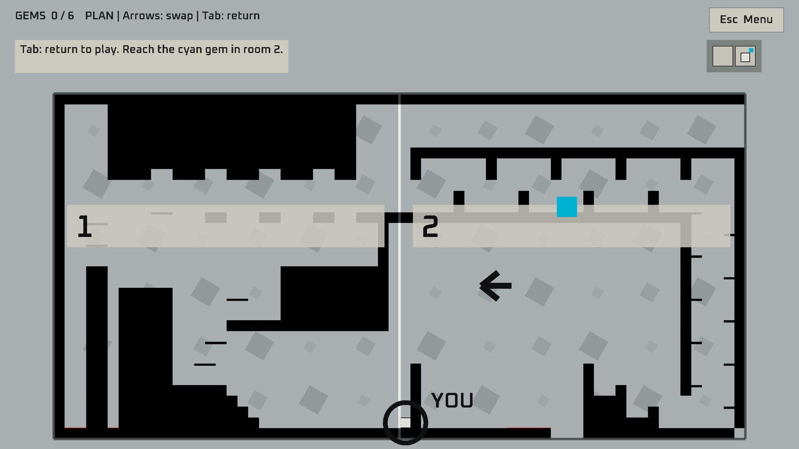
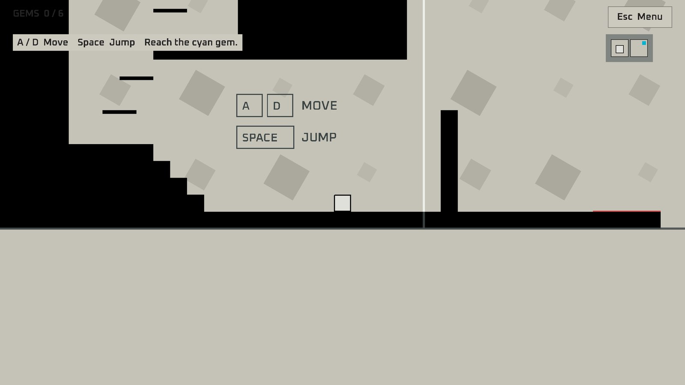
Map design
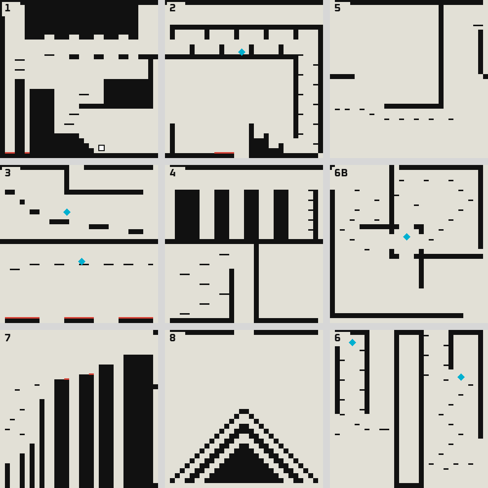
Nine rooms of 32 × 32 tiles, drawn here from the game’s room files in their starting layout. Which rooms connect depends on what you place next to what, and rooms move during the run, so the route below is a sequence of rooms rather than a path on this picture.
Room 3 and room 6 are each visited twice for different gems: the same room becomes a different place once its neighbours change.
ONE FULL SOLUTION · 12 ROOM VISITS · 16 SWAPS
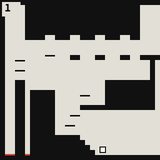
1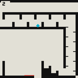
21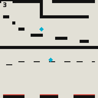
32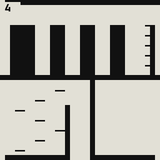
4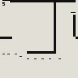
5- 33
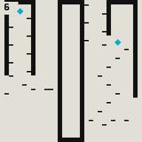
64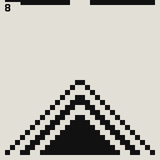
8- 65
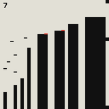
7- 2
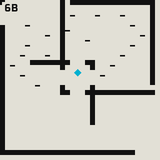
6B6
Replayed end to end by an automated test with normal controls and legal swaps only. One working solution, not the shortest.
Tutorial plan
There is no tutorial screen. The only standing text is “Reach the gem.” Everything else is taught by where the gems are and how much of the map exists yet.
ONE IDEA PER GEM
Each stretch of the route confirms one thing: that you will swap rooms for a gem you can see; that a corridor can wait while the real target is further down; that the same room can be run twice; that a narrow edge matters more than an open one.
THE BOARD GROWS
The run starts with only rooms 1 and 2. The first gem adds room 3 on a 2 × 2 board with one empty slot; the second gem opens all nine. The first swap is learned with almost nothing else to choose from.
HINTS ARRIVE ON TIME
Room 1 shows movement and jumping. After the first gem, Tab is introduced, the game asks for room 2 above room 3, confirms the connected edge, and acknowledges when you step through it.
THEN LET GO
The first three gems appear one at a time, in order. From the fourth on, the rest appear together and can be taken in any order.
If a stretch keeps failing, fix it in this order: move the gem somewhere easier to see; make unconnected edges clearer in the plan view; only then add a short line of text.tutorial plan (translated)
The tutorial works when someone with no explanation can get from the first gem to the last, and can say: “the gem is in another room, so I have to swap rooms.”tutorial plan (translated)
Player’s comments
The core idea read straight away: seeing two rooms change places made the genre collision tangible.
The cost showed too. One player got stuck in room 4 and never reached the last gems. Swapping can build dead ends, and the game does too little to show you are in one.
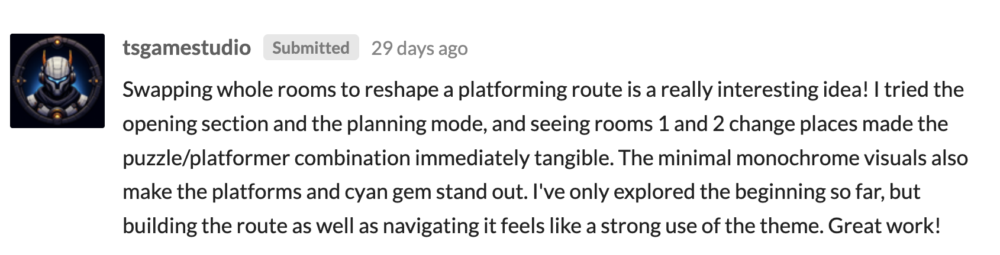
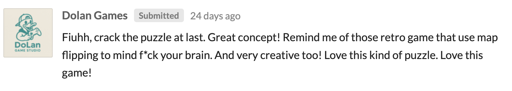
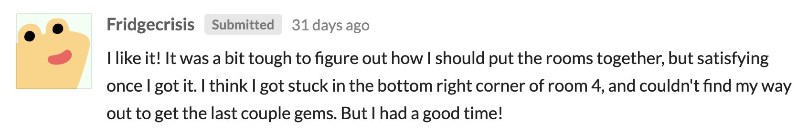
Bezi Results
Polish held at 5. Gameplay dropped the most, from 5 to 3.